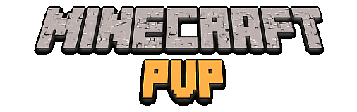
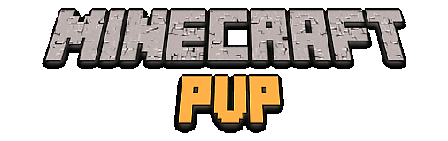

Types of Servers
Factions
Factions servers are the most common type of server. They usually have a PVP area around the spawn point of the map. Usually, the spawn point is raised from the PVP area, to avoid people jumping out of PVP and back into spawn where they will be safe.
Away from spawn in the wilderness, it is also PVP; this means that you can randomly be attacked by someone when you are just walking around. Incase this happens, you should always wear some armour and have a sword on you.
Factions servers may also have an arena just for organised PVP. In here, you may be able to have one on one (1v1) fights, 2v2, or maybe even more.
KitPVP
KitPVP servers are servers, where you don't have to work for your items. You can just type in a command or click a sign and items will be given to you. The maps are usually small and there are no teams, which means it is free for all battle. Some KitPVP servers have a place where you can have 1v1 fights.
Soup
Soup PVP is a type of KitPVP server where you are able to regenerate health by eating mushroom soup. There are usually posts where you can refill your soup if you run out.
Potion
Potion PVP servers are a type of KitPVP server, where you are given the best items in the game and potions which, give you a significant buff. Health potions are your source of healing on these servers. This can make it a bit more difficult than soup PVP.
Hunger Games
In Hunger Games servers, there are usually a large amount of people on a large map, where you have to hide from people hunting you down, while you mine for resources. Once you have all your resources (often a set of iron armour and an iron sword), you go to the surface and make your way to the middle, where there is a "feast" and a large group of chests spawn with unobtainable items in them. The person who gets these items will have a huge advantage over the other players and may go on to win the match, by killing all the other players.
Hunger Games servers are named and based off of the movie and book, The Hunger Games.
Survival Games
Survival Games servers are much like Hunger Games servers, but instead of mining you search around the map for chests and collect the items from them.